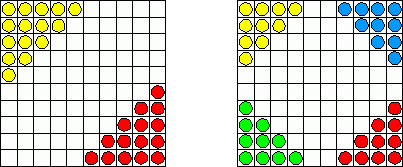

A halma Nagy-Britanniában született, nem túl régen, úgy 1880 táján. Nagyon hamar népszerű lett Európában, majd az egész világon. A halma az üldözéses játékok családjába tartozik.
A játék szabályai:
- A 10*10 mezős táblán két játékos játszhat 15-15 bábuval, vagy négy játékos, egyenként 10-10-zel.
- A kétszemélyes játéknál a tábla két szemközti sarkában, a négyszemélyes játszmában a négy sarokban állítjuk fel a bábukat vagy korongokat.
- A játék célja, hogy a játékosok (mindkét változatban) elfoglalják a sajátjukkal szemközti sarkot.
- A játékosok állapodjanak meg, hogy milyen sorrendben következnek egymás után!
- Tetszés szerinti irányban (előre, hátra, jobbra, balra sorirányban vagy átlóirányban) bármelyik üres szomszédos mezőre léphetnek a bábuk: egy lépésben, egy bábu, egy pozíciót.
- Ugrani is szabad: mind a saját, mind az ellenfél bábuját átugorhatja a "lépő-haladó bábu" (de az ellenfél bábuit nem ütheti ki).
- Az nyer, akinek elsőként sikerül elfoglalnia a szemközt fekvő sarok indulási helyzetét.
{kind=link}
